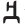
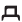
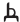
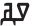
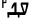

߀
0 digit.
`, '\u{07C1}': `߁
1 digit.
`, '\u{07C2}': `߂
2 digit.
`, '\u{07C3}': `߃
3 digit.
`, '\u{07C4}': `߄
4 digit.
`, '\u{07C5}': `߅
5 digit.
`, '\u{07C6}': `߆
6 digit.
`, '\u{07C7}': `߇
7 digit.
`, '\u{07C8}': `߈
8 digit.
`, '\u{07C9}': `߉
9 digit.
`, '\u{07CA}': `ߊ
a vowel.
ߓߊ߬ߣߊ
Combinations
ʕa is ߊ߳ (used for non-native sounds in loan words) Represents Arabic عَ.
`, '\u{07CB}': `
ߋ
e vowel.
ߟߋߟߋ
Combinations
ǝ is ߋ߳ (used for non-native sounds in loan words)
`, '\u{07CC}': `
ߌ
i vowel.
ߦߙߌ
`, '\u{07CD}': `
ߍ
ɛ vowel.
ߤߣߍ
`, '\u{07CE}': `
ߎ
u vowel.
ߡߎ߬ߙߎ
Combinations
y is ߎ߳ (used for non-native sounds in loan words)
`, '\u{07CF}': `
ߏ
o vowel.
ߓߟߏ
`, '\u{07D0}': `
ߐ
ɔ vowel.
ߣߐߣߐ
`, '\u{07D1}': `
ߑ
Indicates that adjacent consonants have no intervening vowel soundep.
For example, the following is pronounced with the vowel after the first letter, even though none is written: ߓߟߏ blo bolo
To show that this should be pronounced without the vowel you need ߓߑߟߏ b˖lo blo
`, '\u{07D2}': `ߒ
This is considered to be neither a consonant nor a vowel. It represents a syllabic alveolar or velar nasal, eg. ߒߞߏ ߡߊ߰ߒߠߊ
It doesn't take the nasal diacritic ߲ [U+07F2 NKO COMBINING NASALIZATION MARK]ep, but it may take a tone diacritic.
`, '\u{07D3}': `ߓ
b consonant.
ߓߊ߲߬ߓߊ
Combinations
bʰ is ߓ߭ (used for non-native sounds in loan words)
`, '\u{07D4}': `
ߔ
p consonant.
ߔߊ߬ߔߘߊ
`, '\u{07D5}': `
ߕ
t consonant.
ߕߊߕߍߟߊ߲
Combinations
tˤ is ߕ߭ (used for non-native sounds in loan words) Represents the Arabic ط.
`, '\u{07D6}': `
ߖ
d͡ʒ consonant.
ߖߌ߰ߖߊ߮
Combinations
z is ߖ߭ (used for non-native sounds in loan words)
zˤ is ߖ߳ (used for non-native sounds in loan words) Represents the Arabic ظ.
`, '\u{07D7}': `
ߗ
t͡ʃ consonant.
ߖߛߎ߬ߘߐ߬ߗߍ߫
Combinations
ð ʒ is ߗ߭ (used for non-native sounds in loan words) Represents the Arabic ذ.
`, '\u{07D8}': `
ߘ
d consonant.
ߘߊߘߐߞߍ
Combinations
dˤ is ߘ߭ (used for non-native sounds in loan words)
`, '\u{07D9}': `
ߙ
r consonant.
ߡߎ߬ߙߎ
Combinations
dʰ is ߙ߳ (used for non-native sounds in loan words)
ʀ is ߙ߭ (used for non-native sounds in loan words)
`, '\u{07DA}': `
ߚ
r*r or rr eg. ߝߚߎ߫
Used where a sequence of r phones are separated by identical vowels. It is common in expressive adverbs and often manifests itself as an extended r-trillcd,xiv.
`, '\u{07DB}': `ߛ
s consonant.
ߛߎߛߋߟߡߊ
Combinations
θ is ߛ߳ (used for non-native sounds in loan words) Represents the Arabic ث.
sˤ is ߛ߫ (used for non-native sounds in loan words) Represents the Arabic ص.
ʃ is ߛ߭ (used for non-native sounds in loan words) Represents the Arabic ش.
`, '\u{07DC}': `
ߜ
ɡ͡b consonant.
ߜߊߜߊߟߌ
Combinations
ɡ is ߜ߭ (used for non-native sounds in loan words)
kp is ߜ߳ (used for non-native sounds in loan words)
ɣ is ߜ߫ (used for non-native sounds in loan words) Represents the Arabic غ.
`, '\u{07DD}': `
ߝ
f consonant.
ߝߊߝߊ
Combinations
v is ߝ߭ (used for non-native sounds in loan words)
`, '\u{07DE}': `
ߞ
k consonant.
ߞߊߞߊߞߊ߫
Combinations
q is ߞ߫ (used for non-native sounds in loan words) Represents the Arabic ق.
x is ߞ߭ (used for non-native sounds in loan words)
`, '\u{07DF}': `
ߟ
l consonant.
ߟߋߟߋ
Combinations
lʰ is ߟ߭ (used for non-native sounds in loan words)
`, '\u{07E0}': `
ߠ
n Used for an allophonic variant of ߟ [U+07DF NKO LETTER LA] where it follows a nasal or nasalisation, either word-internally or across word boundaries, eg. ߘߏ߲߬ߠߌ߲
`, '\u{07E1}': `ߡ
m consonant.
ߡߊ߬ߡߛߏ߬ߣߍ߲
Combinations
mʰ is ߡ߭ (used for non-native sounds in loan words)
`, '\u{07E2}': `
ߢ
ɲ consonant.
ߢߐ߯ߡߍ
Combinations
nʰ is ߢ߭ (used for non-native sounds in loan words)
`, '\u{07E3}': `
ߣ
n consonant.
ߛߌߣߊߣߍ߲
`, '\u{07E4}': `
ߤ
h consonant.
ߤߊߤߊߣߍ߲
Combinations
ħ is ߤ߭ (used for non-native sounds in loan words)
`, '\u{07E5}': `
ߥ
w consonant. ߥߏ߲ߥߏ߲ߠߌ
`, '\u{07E6}': `ߦ
j consonant.
ߞߊߛߌߦߊ
Combinations
yʰ is ߦ߭ (used for non-native sounds in loan words)
`, '\u{07E7}': `
ߧ
ɲ Used for an allophonic variant of ߦ [U+07E6 NKO LETTER YA] where it follows a nasal or nasalisation, either word-internally or across word boundaries, eg. ߓߏ߲߬ߧߊ
`, '\u{07E8}': `ߨ
(archaic)
d͡ʒ consonant.
`, '\u{07E9}': `
ߩ
(archaic)
t͡ʃ consonant.
`, '\u{07EA}': `
ߪ
`, '\u{07EA}': `ߪ
(archaic)
r consonant.
rː consonant.
`, '\u{07EB}': `
߫
˦ tone mark indicating a short high tone.
ߓߊ߯ߙߊ߫
Combinations
Also used above consonants to represent sounds from other languages, particularly French and Arabic, as follows:
q is ߞ߫ (used for non-native sounds in loan words) Represents the Arabic ق.
sˤ is ߛ߫ (used for non-native sounds in loan words) Represents the Arabic ص.
ɣ is ߜ߫ (used for non-native sounds in loan words) Represents the Arabic غ.
`, '\u{07EC}': `
߬
˨ tone mark indicating a short low tone.
ߜߟߊ߬ߥߊ߰ߘߋ߲ `, '\u{07ED}': `߭
˨˦ tone mark indicating a short rising tone.
ߓߊ߭Ordinal marker
Also used to indicate the first ordinal, eg. ߁߭
For ordinal numbers after the first see ߲ U+07F2 NKO COMBINING NASALIZATION MARK.
Repertoire extension
Also used above consonants to represent sounds from other languages, particularly French and Arabic, as follows:
| ߓ߭ | bʰ | ߓ [U+07D3 NKO LETTER BA] | |
| ߕ߭ | ᵵ | ߕ [U+07D5 NKO LETTER TA] | Arabic ط |
| ߖ߭ | z | ߖ [U+07D6 NKO LETTER JA] | |
| ߗ߭ | ð and ʒ | ߗ [U+07D7 NKO LETTER CHA] | Arabic ذ and French |
| ߘ߭ | đ | ߘ [U+07D8 NKO LETTER DA] | |
| ߙ߭ | ʀ | ߙ [U+07D9 NKO LETTER RA] | French |
| ߛ߭ | ʃ | ߛ [U+07DB NKO LETTER SA] | Arabic ش |
| ߜ߭ | g | ߜ [U+07DC NKO LETTER GBA] | |
| ߝ߭ | v | ߝ [U+07DD NKO LETTER FA] | |
| ߞ߭ | x | ߞ [U+07DE NKO LETTER KA] | Arabic خ |
| ߟ߭ | lʰ | ߟ [U+07DF NKO LETTER LA] | |
| ߡ߭ | mʰ | ߡ [U+07E1 NKO LETTER MA] | |
| ߢ߭ | nʰ | ߢ [U+07E2 NKO LETTER NYA] | |
| ߤ߭ | ḥ | ߤ [U+07E4 NKO LETTER HA] | Arabic ح |
| ߦ߭ | yʰ | ߦ [U+07E6 NKO LETTER YA] |
߮
Tone mark indicating a long descending tone, eg. ߖߌ߰ߖߊ߮
`, '\u{07EE}': `߮
˦˨ tone mark indicating a long descending tone.
ߖߌ߰ߖߊ߮
`, '\u{07EF}': `
߯
˦ tone mark indicating a long high tone.
ߓߊ߯ߙߊ߫ `, '\u{07F0}': `߰
˨ tone mark indicating a long low tone.
ߜߟߊ߬ߥߊ߰ߘߋ߲ `, '\u{07F1}': `߱
˨˦ tone mark indicating a long rising tone.
ߜߐ߱
`, '\u{07F2}': `߲
Applied to a vowel to indicate nasalisation, eg. ߣߌ߲߬ nĩ²
It should be input between the base character and any of the tone marksep.
Ordinal marker
Also used to indicate an ordinal number (except for the first), eg. ߂߲
When there are multiple digits in a number, the diacritic appears only under the last in sequence, eg. ߁߂߃߲
For the first ordinal number, see ߭ U+07ED NKO COMBINING SHORT RISING TONE.
`, '\u{07F3}': `߳
Used above vowels and consonants to represent sounds from other languages, particularly French and Arabic, as follows:
| ߊ߳ | ʕa | ߊ [U+07CA NKO LETTER A] | Arabic عَ |
| ߋ߳ | ǝ | ߋ [U+07CB NKO LETTER EE] | French |
| ߎ߳ | y | ߎ [U+07CE NKO LETTER U] | French |
| ߖ߳ | ƶ | ߖ [U+07D6 NKO LETTER JA] | Arabic ظ |
| ߙ߳ | dʰ | ߙ [U+07D9 NKO LETTER RA] | |
| ߛ߳ | θ | ߛ [U+07DB NKO LETTER SA] | Arabic ث |
| ߜ߳ | kp | ߜ [U+07DC NKO LETTER GBA] |
ߴ
Indicates the elision of a vowel while preserving the tonal information of what was elided. The height relative to the baseline can varyep, eg.cd,xvi ߌ ߓߴߊ߬ ߝߐ߫
`, '\u{07F5}': `ߵ
Indicates the elision of a vowel while preserving the tonal information of what was elided. The height relative to the baseline can varyep, eg.cd,xvi ߌ ߞߵߊ߬ ߝߐ߫
`, '\u{07F6}': `߶
Pronounced o, this symbol is added to phrases to indicate remote future placement of the topic under discussion.ep
`, '\u{07F7}': `߷
Used to end major sections of the text, and represents the three stones that hold a cooking pot over the fireu.
`, '\u{07F8}': `߸
Comma. Sometimes used distinctively with the arabic comma in the same text, eg.
ߕߏ߲ߘߋ ߟߊ߫ ߊߙߊߓߎ ߞߐ߲ߛߐߣ ߊ ߛߌ߰ߙߊ߬ߕߊ ߊ ߘߏ߫ ߟߎ߫ ߞߊ߲߬ ߸ ߛߊ߫ ( ߜ ، ߔ ، ߗ ) ߟߎ߬ ߘߌ߫ ߛߋ߫ ߛߓߍ߫ ߟߊ߫ ߸ ߏ߬ ߟߎ߬ ߡߍ߲ ߠߎ߬ ߕߍ߫ ߊߙߊߓߎ߫ ߞߊ߲ ߘߐ߫ ߡߎ߰ߡߍ߫.
Typically separated from the previous word by a space.
`, '\u{07F9}': `߹
`, '\u{07FA}': `ߺ
Sometimes used like the ـ [U+0640 ARABIC TATWEEL] to instead stretch the intra-word baseline, either for justification, or headings, etc.
`, '\u{07FD}': `߽
Used to abbreviate units of measuree4. The table shows some examples from a long list at e4:
| Full word | Abbreviation |
|---|---|
| ߞߎߘߍ |  |
| ߛߌߘߐ |  |
| ߕߏ߲ߜߊ |  |
| ߜߟߊ߬ߥߊ߰ߘߋ߲ |  |
| ߜߟߊ߬ߗߡߍ߬ߝߘߎ߬ߓߍ߲ |  |
߾
Unicode 11 introduced 2 currency symbols to represent the dorome and taman.e4 The symbols precede the numeric amounts, eg. ߾߅،߿߉߅
Observation: It's not clear who uses these currency denominations.
`, '\u{07FF}': `߿
Unicode 11 introduced 2 currency symbols to represent the dorome and taman.e4 The symbols precede the numeric amounts, eg. ߾߅،߿߉߅
Observation: It's not clear who uses these currency denominations.
`, // OTHER '\u{2E1C}': `Used with ⸜ [U+2E1C LEFT LOW PARAPHRASE BRACKET] as a pair to indicate indirect quotationsep, eg. ⸜ߒߞߏ⸝
`, '\u{2E1D}': `Used with ⸝ [U+2E1D RIGHT LOW PARAPHRASE BRACKET] as a pair to indicate indirect quotationsep, eg. ⸜ߒߞߏ⸝
`, }